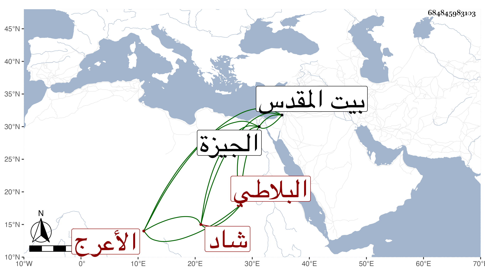

0902Sakhawi.DawLamic.ITO20230111-ara1.EIS1600.684845983103
Biography ID: 684845983103
1055
سودون البلاطي بلاط الأعرج شاد شربخاناه الناصر فرج ويقال له خجا سودون . خدم بعد قتل أستاذه مع الناصر عند نوروز الحافظي ثم اتصل بالمؤيد شيخ ، وصار خاصكيا ثم بجمقدارا ، واختص به حتى كان يحمله على رقبته لما ضعفت حركته ولا يكترث بجهامته لكونه كان أحد الأقوياء المضروب بهم المثل ، ثم قربه الأشرف وأمره عشرة وجعله من رؤس النوب ثم أنعم عليه بإمرة طبلخاناه ومع ذلك كان يقيم بالطبقة سنة فأكثر لا ينزل منها ولا يركب فرسا بل ما كان يرى غالبا إلا في الخدمة السلطانية ثم يعود من القصر السلطاني إلى الطبقة فيقلع قماش الخدمة ثم يدخل إلى مدمنه يعالج بالحجارة التي كل واحد منها كفردة الطاحون العظيمة أو أكثر ويقال إن زنة حجره الذي كان يحمله برقبته اثنا عشر قنطارا بالمصري ، وكان السلطان عمله رأس نوبة لولده الناصري محمد فكان يضطر للنزول معه فيركب على هيئة الاجناد بغير تخفيفة على رأسه وتعاظم في مركبه ، وبلغ السلطان مرة أنه منذ سنين ما رأى الربيع ولا عدي إلى الجيزة فألزمه بذلك ولم يقبل منه استعفاءه وأنعم عليه بما يأكله في الربيع مع أبنائه من غنم ودجاج وسكر وغير ذلك فتوجه وأقام بها أياما ثم عاد ، ولم ينفك عن طريقته حتى قدمه الأشرف وألزمه النزول لداره وكانت تجاه مدرسة تغري بردى المؤذي ويسكن فيها بمماليكه والذين في خدمته منهم ينيفون على مائة وخمسين سوى الكتابية فكان يأمرهم بالركوب في خدمته أيام المواكب خاصة وبعدم النزول عن خيولهم إذا انتهى لباب داره بل يقفون ركبانا يمينا ويسارا ويدخل هو إلى منزله وحده ومعه البابا فقط كعادة الخاصكية ولم يكن له جمدار ولا سلحدار ولا يمد سماطا بل يأكل وحده ويعطى لكل من مماليكه ثلاثة أرطال لحم ويعتذر بأن هذا أنفع في حقهم مع أن عمل السماط أوفر له ويصرف ذلك وكذا جوامكهم وعليقهم في أول الشهر من حاصله ، وكانت له ثروة زائدة ومال جزيل وسلاح عظيم وبرك هائل يشاهد حين توجهه في التجاريد ونحوها ويكون في سفره منفردا عن الامراء ولم ينفك عن إقامته ببيته مشتغلا بأنواع الملاعب والعلاج بالحجارة ، ولا يتزوج حفظا لقوته ، وكان ممن تجرد إلى البلاد الشامية صحبة قرقماس الشعباني . ومات الأشرف قبل عود الأمراء من ارزنكان إلى البلاد الحلبية وكتب بحضورهم ورسم لهذا بتوجهه إلى القدس بطالا فكانت منيته به في ثالث جمادى الأولى سنة اثنتين وأربعين . أرخه العيني . وكان عاقلا عارفا ذا سكينة مليحا أحمر اللون أسود اللحية مستديرها إلى الطول أقرب يقرأ يسيرا ويحفظ بعض المسائل مع قلة الكلام والعشرة للناس والحرص على جمع المال وعدم صرفه إلا في طريقه رحمه الله .
